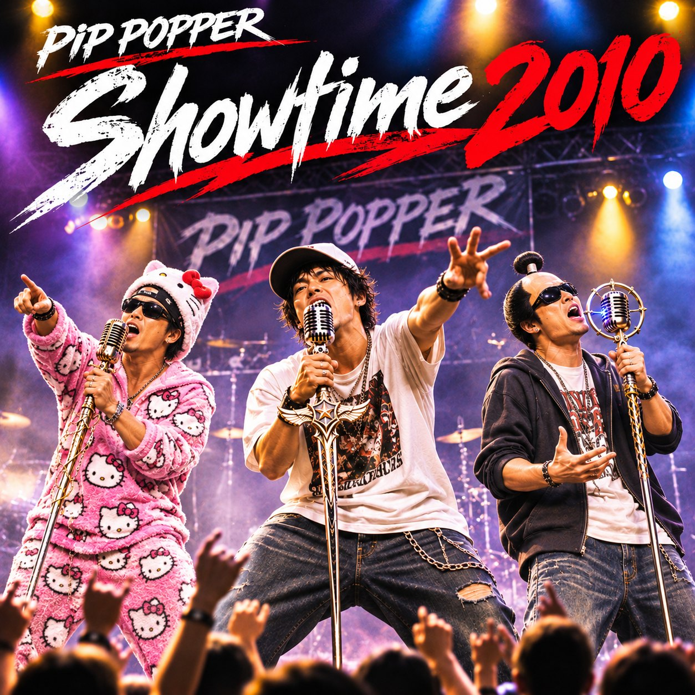

Showtime 2010

02
Showtime 2010
PIP POPPER
AI ImpressionAIの感想
「PIPPOPPERからこの Beat!」の合図で幕を開ける、3人のMCによるヒップホップ・ナンバー。架空のライブステージを舞台に、マイクを回しながら言葉遊びと下ネタ、自虐を次々と畳みかけ、「T-H-G SHOWTIME」の掛け声で客席を巻き込んでいく。「もう三十四の三銃士」と年齢を笑い飛ばしながら、頭の中はティーンエイジのまま。評論家に唾を飛ばして「ごめんあそばせ」と返すふてぶてしさと、「メジャーには成れない超マイナー」でも仲間と遊び続ける姿勢が、この曲を勢いに満ちたショーに仕上げている。
Lyrics
言葉がハマる. T-H-G いい感じ！このコンビネーションTo the Beat.遊びの中のセラピーPIPPOPPERからこの Beat!listen Please!Check it out
It’s showtime,君らもご招待、ズボンの中もパンク状態。やりたい放題のエロ兄弟。YEAH! 暴いたるかその正体絶対手は出さんと言う。それを自然と言う。やつを偽善と言う。Hey,You,You,You！オマエが言う退屈ってヤツを自由と言う！その時間有効に使っちまいな！メジャーには成れない超マイナー外野のだせぇ～という罵声 多いが、仲間が数％！ 評論家には唾飛ばせ「顔にかかった？」ごめんあそばせ これが俺らのやり方だぜこっち来てみな。楽しいぜ断然！
This is my world Communication絶妙な俺らのCombinationこのtensionで熱く熱唱My music, My LIFE satisfactionT/W/O GENERATIONから生まれてくるIMAGINATIONもちろんまだまだ行くでしょ？T – H – G SHOWTIME
行くぜVarse2響け体中にズレた頭のチューニングイメージ残す遊びの名人俺様がめくる次のページ乗りこなすステージエンジン全開！先陣切ってLike a 花の慶次傾奇まくって気分爽快！世の中じゃまたくだらん競争かい？自慢だらけの同窓会！より気分がいいぜ俺たちのshowtime.もっと頂戴！短期間に 敏感に反応三半規管に触ってねぇのに俺様を痴漢に…自意識過剰のブス堪忍！もう三十四の三銃士！未だに女は外見重視！T-H-G頭ん中はティーンエイジ! Let’s go!
This is my world Communication絶妙な俺らのCombinationこのtensionで熱く熱唱My music, My LIFE satisfactionT/W/O GENERATIONから生まれてくるIMAGINATIONもちろんまだまだ行くでしょ？T – H – G SHOWTIME
やりたいこと見つからないとボヤいてるなら ここにlet me goここから 始まるすべてがずっと捜してた 君だけのMUSIC
来たぜ来たぜ味方の北風。メンバー変えて帰って来たぜ。俺から始まったこの遊戯。備わってっか？恥捨てる勇気！ 活動休止でも俺中心の合図で仕事も即中止。永久歯みたくもう生えてこねぇ。一度抜けたら戻ってこねぇ～。呼び出す度 ここにPlace to be皆でrappin’ 皆Happy.WAKUWAKUするぼど極楽楽々文句なくこのCLUBコングラッチュレーションIMAGENATIONって今じゃねぇっしょ？One for the girl. Two for the show.よこしまな夜に身体よこしな！お嬢ちゃんドンドンショーツも汚しなそのままここに3日stay！そんな感じで完成MixTape
This is my world Communication絶妙な俺らのCombinationこのtensionで熱く熱唱My music, My LIFE satisfactionT/W/O GENERATIONから生まれてくるIMAGINATIONもちろんまだまだ行くでしょ？T – H – G SHOWTIME
This is my world Communication絶妙な俺らのCombinationこのtensionで熱く熱唱My music, My LIFE satisfactionT/W/O GENERATIONから生まれてくるIMAGINATIONもちろんまだまだ行くでしょ？T – H – G SHOWTIME